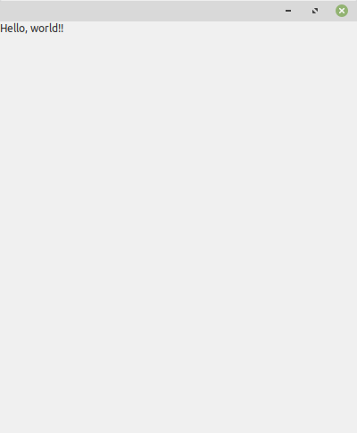
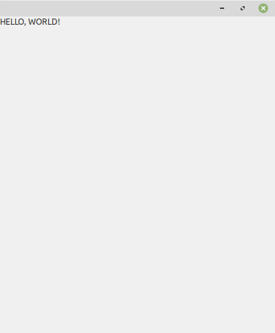

This shows how to start building a UI with wxml.
Run <python> -m wxml hello.xml
After running the above command, you should now see a window like the one below.

When you're starting to design a user interface, you probably don't want to have to keep running the above command when you make changes to file.
Fortunately, wxml can be told to watch the given filename for changes and when it detects modifications, it will automatically rebuild the UI for you.
Run <python> -m wxml --design hello.xml or <python> -m wxml -d hello.xml
Now, open hello.xml in your text editor of choice and change the StaticText's text attribute to something else ("HELLO, WORLD!"). After you save the file, the UI will rebuilt automatically and you can see your changes.

If you're running in design mode, you may make an edit that will result in errors when the UI is built. The module comes in a built-in error viewer that can be shown by passing in a debug flag argument.
Run <python> -m wxml -d --debug-flags ERROR hello.xml.